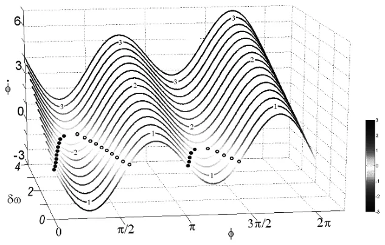
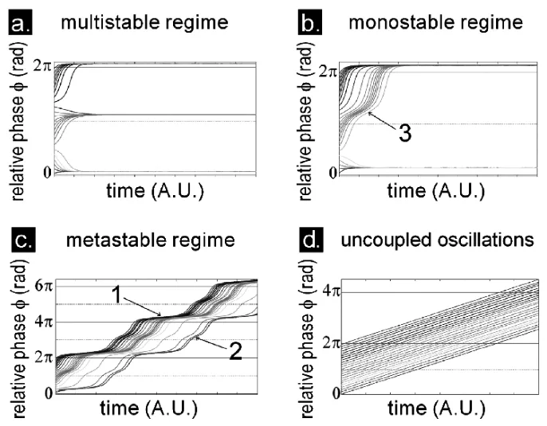
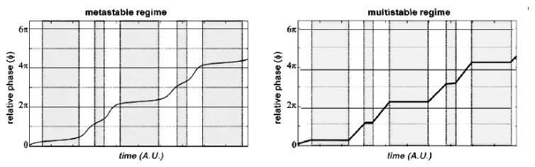
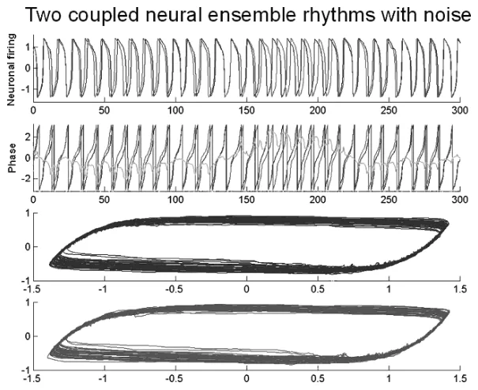
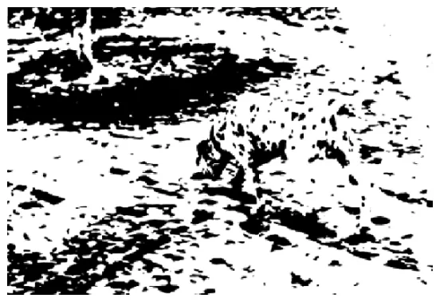

Phần I · Bài 2 — Động lực học phối hợp siêu ổn định của não bộ (Kelso & Tognoli)
giữa các bộ dao động (phi tuyến) ghép cặp phi tuyến. Thiết kế sau này được thúc đẩy bởi bằng chứng thực nghiệm cho thấy các đơn vị cấu trúc của não bộ hỗ trợ các quá trình cảm giác, vận động và nhận thức thường biểu hiện dưới dạng các dao động với các tính chất phổ được xác định rõ. Theo động lực học phối hợp, sự ghép cặp phi tuyến giữa các thành phần không đồng nhất là cần thiết để tạo ra phạm vi rộng các hành vi não bộ quan sát được, bao gồm sự hình thành mẫu, tính đa ổn định, chuyển đổi (không cần “công tắc”), trễ (hysteresis) và tính siêu ổn định. Động lực học phối hợp siêu ổn định hòa giải các khuynh hướng vốn đã được biết đến rõ của các vùng não chuyên biệt trong việc thể hiện tính tự chủ của chúng với các khuynh hướng phối hợp cùng nhau như một thể hiệp đồng. Chúng tôi thảo luận về tính siêu ổn định trong não bộ bằng cách mô tả các điều kiện thuận lợi tồn tại cho sự xuất hiện của nó và bằng cách đưa ra một số dự đoán cho việc đặc trưng hóa thực nghiệm trong các bản ghi sinh lý thần kinh. Tiếp theo là một cuộc đối thoại ngắn nhằm làm rõ và hòa giải cách tiếp cận hiện tại với cách tiếp cận của W. Freeman. Cuối cùng, chúng tôi khám phá sơ lược một số hệ quả của động lực học phối hợp siêu ổn định đối với tri giác và tư duy.
2 Hướng tới một Khoa học Bổ sung
Cho đến thời đại của Bohr, Heisenberg và Pauli, các nhà khoa học đã tranh luận về việc liệu ánh sáng, âm thanh và các quá trình ở quy mô nguyên tử về cơ bản mang tính chất hạt hay tính chất sóng. Triết học nói về chính đề và phản đề, về sự căng thẳng biện chứng, về cái tôi và cái phi tôi, về định tính và định lượng, khách quan và chủ quan, như thể chúng là những sự phân chia hoặc-này-hoặc-kia. Khuynh hướng nhị phân hóa này, tức là chia thế giới thành các phạm trù đối lập, dường như là một đặc tính ‘bẩm sinh’ của con người, xuất hiện rất sớm trong quá trình phát triển và độc lập với nền tảng văn hóa [1]. Tất nhiên, nó là trọng tâm của phương pháp giả thuyết-diễn dịch trong khoa học hiện đại, vốn đã đạt được những tiến bộ vượt bậc bằng cách kiểm định các giả thuyết thay thế, tiến lên phía trước khi loại bỏ các phương án thay thế. Hoặc có vẻ là như vậy.
Đối với Bohr, Pauli và Heisenberg, ba người khổng lồ của khoa học thế kỷ 20 và là những kiến trúc sư trưởng của lý thuyết thành công nhất mọi thời đại, điều trở nên vô cùng rõ ràng là những sự nhị phân sắc bén và các mặt đối lập gay gắt phải được thay thế bằng những sự bổ sung tinh tế và phức tạp hơn nhiều. Đối với toàn bộ tự nhiên, bao gồm cả bản chất con người (và có lẽ cả bộ não con người). Có lẽ Pauli [2] đã diễn đạt điều này hay nhất:
“Đối với chúng tôi, quan điểm duy nhất có thể chấp nhận được dường như là quan điểm công nhận cả hai mặt của thực tại—định lượng và định tính, vật lý và tâm lý—là tương thích với nhau. Sẽ là thỏa đáng nhất nếu vật lý và tâm lý có thể được xem như những khía cạnh bổ sung của cùng một thực tại” (tr. 260).
Những phát triển đáng kinh ngạc của cơ học lượng tử chứng minh tính bổ sung thiết yếu của cả ánh sáng và vật chất lẽ ra phải mở ra không chỉ một nhận thức luận mới mà còn một khoa học bổ sung tổng quát. Tuy nhiên, chúng đã không làm được điều đó. Tư duy theo các mặt đối lập và kiểu hoặc-này-hoặc-kia đến một cách tự nhiên với tâm trí con người. Khó nắm bắt hơn nhiều là quan niệm rằng các mặt đối lập bổ sung cho nhau, contraria sunt complementa như câu châm ngôn trên gia huy nổi tiếng của Bohr đã nói. Một bước tiến theo hướng này có thể xảy ra nếu các khía cạnh bổ sung và động lực học của chúng được tìm thấy không chỉ ở cấp độ các quá trình hạ nguyên tử mà cơ học lượng tử giải quyết, mà còn ở cấp độ bộ não con người và hành vi con người mà động lực học phối hợp nghiên cứu.
3 Hướng tới một Khoa học Não bộ Bổ sung
Một lập trường bổ sung có thể tác động như thế nào đến việc hiểu bộ não? Lịch sử nghiên cứu não bộ trong vài thế kỷ qua không hề xa lạ với sự nhị phân: nó chứa đựng hai lý thuyết xung đột về cách bộ não con người hoạt động (xem [3] để có một phân tích xuất sắc). Một lý thuyết nhấn mạnh rằng bộ não bao gồm một tập hợp khổng lồ các vùng riêng biệt, mỗi vùng có thể định vị trong vỏ não và mỗi vùng có khả năng thực hiện một chức năng độc nhất. Trường phái tư tưởng kia nhìn nhận bộ não không phải là một tập hợp các trung tâm chuyên biệt, mà là một cơ quan tích hợp cao độ. Theo quan điểm này, không một chức năng đơn lẻ nào có thể là lãnh địa riêng của bất kỳ phần độc nhất nào của vỏ não. Tuân theo châm ngôn cổ, bộ não toàn thể lớn hơn và khác biệt với tổng các bộ phận của nó. Giống như các cuộc tranh luận về tự nhiên với nuôi dưỡng, học tập với bẩm sinh, quy giản luận với toàn thể luận, hai quan điểm xung đột này về cách bộ não hoạt động đã tạo ra nhiều nhiệt lượng hơn là ánh sáng. Tuy nhiên, thật đáng ngạc nhiên, hai sự đối lập hoặc-này-hoặc-kia đó vẫn tồn tại. Theo cách nói hiện đại, các nhà nghiên cứu đặt câu hỏi liệu bộ não có bị “phân tách” thành các bộ phận hay “tích hợp” thành một thể thống nhất, liệu thông tin có được biểu diễn theo cách mô-đun, chuyên biệt theo phạm trù hay theo cách phân tán trong đó nhiều vùng khác nhau của bộ não cùng tham gia, mỗi vùng biểu diễn nhiều loại thông tin khác nhau.
Trong khoảng 20 năm trở lại đây, một số ý tưởng mới về tổ chức não bộ đã xuất hiện có thể mang lại cái nhìn sâu sắc hơn về tâm trí con người, cả cá nhân lẫn tập thể. Một bước tiến theo hướng này là của Sungchui Ji [4]. Khi thúc đẩy nhận thức luận và bản thể luận “bổ sung luận” của mình, Ji dựa vào sinh học của bộ não con người, cụ thể là bản chất bổ sung của các chuyên biệt hóa bán cầu não. Đối với Ji, bán cầu trái và bán cầu phải có các chức năng tâm lý tương đối riêng biệt và “thực tại tối hậu”, như được bộ não con người tri giác và truyền đạt, là một sự hợp nhất bổ sung của các mặt đối lập [4]. Đây là một bức tranh được vẽ bằng những nét cọ rất rộng. Ở quy mô chi tiết hơn nhiều, Stephen Grossberg [5] trong một bài báo có tựa đề “Bộ não Bổ sung” (The Complementary Brain) đã thu hút sự chú ý vào bản chất bổ sung của các quá trình não bộ. Ví dụ, hệ thống thị giác được phân chia dựa trên độ nhạy cảm của nó đối với các khía cạnh khác nhau của thế giới, thông tin về hình dạng và chuyển động được truyền tải bởi các con đường vỏ não bụng và lưng. Đối với Grossberg, thứ tự trí nhớ làm việc bổ sung cho tốc độ trí nhớ làm việc, xử lý màu sắc bổ sung cho xử lý độ chói, v.v. Grossberg tin rằng bộ não được tổ chức theo cách này để xử lý các loại thông tin bổ sung nhau trong môi trường. Đối với ông, một mục tiêu của nghiên cứu trong tương lai là nghiên cứu trực tiếp hơn cách các khía cạnh bổ sung của thế giới vật lý được chuyển dịch thành các thiết kế não bộ bổ sung để đối phó với thế giới này.
Nếu bộ não, giống như thế giới vật lý, thực sự được tổ chức xung quanh các nguyên lý của tính bổ sung, vậy tại sao chúng ta vẫn cố chấp phân chia nó thành các mặt đối lập? Điều gì làm phân mảnh thế giới và chính cuộc sống? Đó có phải là bản chất của tự nhiên? Hay đó là chúng ta, cách chúng ta tồn tại? (hãy xem sự phân chia hoặc-này-hoặc-kia tai hại đến mức nào!). Tất nhiên, câu hỏi lâu đời này đã có từ hàng nghìn năm trước và xuất hiện lặp đi lặp lại trong lịch sử tư tưởng nhân loại, cho đến tận ngày nay [6, 7]. Tuy nhiên, ngoài cơ học lượng tử, chưa có câu trả lời thỏa đáng nào từ khoa học xuất hiện. Được thúc đẩy bởi những phát triển thực nghiệm và lý thuyết mới trong động lực học phối hợp, khoa học về sự phối hợp, Kelso và Engstrøm [7] đã đưa ra một câu trả lời, cụ thể là lý do tâm trí phân mảnh thế giới thành các cặp nhị phân (và quan trọng hơn là cách các khuynh hướng đối lập được hòa giải) gắn kết sâu sắc với cách bộ não con người hoạt động, đặc biệt là động lực học phối hợp siêu ổn định của nó (ví dụ: [8, 9, 10, 11, 12, 13, 14]). Hãy cùng tóm tắt một số khía cạnh chung của động lực học phối hợp, trước khi tập trung vào dạng toán học cốt lõi của nó.
4 Động lực học Phối hợp của Não bộ: Tính đa ổn định, Chuyển pha và Tính siêu ổn định
Từ chỗ đứng bên lề của khoa học thần kinh trong suốt năm mươi năm và hơn thế nữa, động lực học não bộ đang từng bước tiến vào vị trí trung tâm. Có ít nhất bốn lý do cho điều này. Thứ nhất là các kỹ thuật ở nhiều cấp độ mô tả hiện nay cho phép khảo sát cả cấu trúc lẫn chức năng trong thời gian thực: từ biểu hiện gen đến từng tế bào thần kinh riêng lẻ, đến các tập hợp tế bào và tiến tới hành vi, các cấu trúc và mối quan hệ qua lại của chúng. Thứ hai là một cách chậm rãi nhưng chắc chắn, các khái niệm, phương pháp và công cụ của các hệ thống động lực học tự tổ chức đang bén rễ. Đã hai mươi năm kể từ khi một bài báo tổng quan trên tạp chí Science trình bày những lý do tại sao [15]. Thứ ba là động lực học là một ngôn ngữ để kết nối các sự kiện từ cấp độ di truyền đến cấp độ tâm trí [12]. Động lực học chứa đựng và phải được lấp đầy bởi nội dung, mỗi cấp độ sở hữu những mô tả riêng và tính bán tự chủ của mình (mọi thứ đều liên kết với nhau, từ một hạt bụi đến một ngôi sao). Thứ tư là bằng chứng thực nghiệm chỉ ra rằng động lực học dường như có liên hệ sâu sắc với một loạt các rối loạn từ bệnh Parkinson đến tự kỷ và tâm thần phân liệt.
Lý thuyết về động lực học phối hợp dựa trên một lượng lớn bằng chứng thực nghiệm về cách bộ não được phối hợp trong không gian và thời gian. Một tập hợp kết quả then chốt là các tế bào thần kinh ở các vùng khác nhau của não bộ dao động ở các tần số khác nhau (xem [16, 17] để có những bài tổng quan xuất sắc). Những dao động này được ghép cặp hoặc “ràng buộc” lại với nhau thành một mạng lưới kết hợp khi con người chú ý đến một kích thích, tri giác, tư duy và hành động [18, 19, 20, 21, 22, 23, 24, 25, 26]. Đây là một quá trình động, tự lắp ráp, trong đó các bộ phận của não gắn kết và tách rời theo thời gian, giống như trong một điệu nhảy vuông đồng quê xưa cũ. Một cơ chế phối hợp như vậy có thể cho phép các đặc trưng tri giác khác nhau của một vật thể, các khía cạnh khác nhau của một khung cảnh chuyển động, các phần ký ức riêng lẻ của một trải nghiệm quan trọng, thậm chí cả những ý tưởng khác nhau nảy sinh trong một cuộc trò chuyện được gắn kết lại thành một thực thể nhất quán.
Mở rộng các quan niệm cho rằng ‘mã thông tin’ nằm ở sự ghép cặp thoáng qua của các đơn vị chức năng, với ý nghĩa sinh lý được trao cho các độ trễ pha cụ thể được hiện thực hóa giữa các phần tử phối hợp [27], chúng tôi đề xuất rằng các mối quan hệ pha mang thông tin, với nhiều điểm hút (các khuynh hướng thu hút) thiết lập các phương án thay thế để các khía cạnh bổ sung xuất hiện trong ý thức [28]. Trong trường hợp đơn giản nhất, các dao động ở các vùng não khác nhau có thể khóa “đồng pha”, các hoạt động não cùng tăng và cùng giảm, hoặc “ngược pha”, một hoạt động dao động của não đạt đỉnh khi hoạt động kia chạm đáy và ngược lại. Đồng pha và ngược pha chỉ là hai trong số rất nhiều trạng thái pha đa ổn định có thể tồn tại giữa nhiều vùng não chuyên biệt khác nhau tùy thuộc vào các tính chất nội tại tương ứng, sự phá vỡ đối xứng và ảnh hưởng qua lại phức tạp của chúng.
Bộ não không chỉ sở hữu nhiều mối quan hệ pha khác nhau bên trong và giữa nhiều bộ phận đa dạng và kết nối với nhau, mà còn có thể chuyển đổi linh hoạt từ mối quan hệ pha này sang mối quan hệ pha khác (về nguyên tắc là trong cùng một liên minh các đơn vị chức năng), gây ra những thay đổi đột ngột trong tri giác, chú ý, trí nhớ và hành động. Những sự chuyển đổi này theo đúng nghĩa đen là các “chuyển pha” trong não bộ, những sự dịch chuyển đột ngột trong trạng thái não gây ra bởi các ảnh hưởng bên ngoài và bên trong như nồng độ biến thiên của các chất điều biến thần kinh và chất dẫn truyền thần kinh trong thân tế bào và khớp thần kinh, nơi một tế bào thần kinh kết nối với tế bào khác.
Động lực học phối hợp mang lại cho não bộ khả năng khóa chặt vào một trong nhiều trạng thái phối hợp ổn định hoặc mối quan hệ pha sẵn có. Bộ não cũng có thể trở nên bất ổn định và chuyển sang một trạng thái phối hợp hoàn toàn khác. Theo quan điểm này, sự bất ổn định là một cơ chế chọn lọc giúp chọn ra trạng thái não phù hợp nhất với hoàn cảnh hiện tại. Khả năng khóa chặt và chuyển đổi có thể mang tính thích nghi và hữu ích, hoặc kém thích nghi và có hại. Chúng có thể áp dụng dễ dàng cho người mắc chứng tâm thần phân liệt hoặc rối loạn ám ảnh cưỡng chế, cũng như cho bác sĩ phẫu thuật đang trau dồi kỹ năng của mình.
Một loại động lực học não bộ thứ ba gọi là tính siêu ổn định đang dần được công nhận có lẽ là quan trọng nhất trong tất cả để hiểu về chính chúng ta. Trong chế độ này, không còn bất kỳ trạng thái não đồng bộ pha và tần số ổn định nào nữa; các vùng riêng lẻ của não bộ không còn hoàn toàn ‘bị khóa chặt’ hay phụ thuộc lẫn nhau. Nhưng trớ trêu thay, chúng cũng không hoàn toàn độc lập. Theo một bài tổng quan gần đây [29]:
Tính siêu ổn định là một quan niệm hoàn toàn mới về chức năng não bộ, nơi các bộ phận riêng lẻ của não thể hiện khuynh hướng hoạt động tự chủ cùng một lúc (chúng tôi nhấn mạnh) với việc chúng thể hiện khuynh hướng hoạt động phối hợp (Kelso, 1991; 1992; 1995; Bressler & Kelso, 2001; xem thêm Bressler, 2003)
Như anh em nhà Fingelkurts nhận xét, tính siêu ổn định là một quan niệm hoàn toàn mới về tổ chức não bộ, không chỉ đơn thuần là sự pha trộn của cái cũ. Các khuynh hướng cá nhân để các vùng đa dạng của não bộ tự thể hiện mình cùng tồn tại với các khuynh hướng phối hợp để ghép cặp và hợp tác như một thể thống nhất. Trong bộ não siêu ổn định, các quá trình cục bộ và toàn cục cùng tồn tại như một cặp bổ sung, chứ không phải là những lý thuyết xung đột. Tính siêu ổn định, bằng cách giảm bớt sự ghép cặp phân cấp chặt chẽ giữa các bộ phận của một hệ thống phức tạp trong khi vẫn cho phép chúng giữ lại cá tính riêng, dẫn đến một hình thức hoạt động lỏng lẻo hơn, an toàn hơn, linh hoạt hơn có thể thúc đẩy sự sáng tạo thông tin mới. Không có kẻ độc tài nào ra lệnh cho các bộ phận phải làm gì. Quá nhiều tự chủ của các bộ phận thành phần đồng nghĩa với việc không có cơ hội phối hợp chúng lại với nhau. Mặt khác, quá nhiều sự phụ thuộc lẫn nhau thì hệ thống bị mắc kẹt, sự linh hoạt toàn cục bị mất đi.
Tính siêu ổn định đưa ra bốn đặc tính ưu việt mà các mô hình nhận thức thần kinh được mời gọi xem xét. Thứ nhất, tính siêu ổn định dung nạp các phần tử không đồng nhất (ví dụ: các vùng não có động lực học nội tại khác biệt; các vùng não có hoạt động gắn liền với chuyển động của các bộ phận cơ thể hoặc các sự kiện trong môi trường).
Thứ hai, tính siêu ổn định không đòi hỏi một cơ chế tách rời như khi hệ thống đang ở trong một điểm hút và phải chuyển sang một trạng thái khác. Điều này có thể tốn kém về mặt thời gian, năng lượng và xử lý thông tin. Trong chế độ siêu ổn định, cả nhiễu ngẫu nhiên lẫn sự thay đổi tham số đều không cần thiết để hệ thống khám phá các kiểu mẫu của nó. Thứ ba, tính siêu ổn định cho phép hệ thần kinh duyệt qua một cách linh hoạt một tập hợp các khả năng (các khuynh hướng của hệ thống) thay vì áp dụng một ‘góc nhìn’ duy nhất. Thứ tư, bộ não siêu ổn định không thiên vị thái cực nào. Nó cũng không phải là sự “cân bằng” giữa các phương án đối lập. Ví dụ, thật vô nghĩa khi nói rằng bộ não phân tách 60% và tích hợp 40%. Thay vào đó, tính siêu ổn định là biểu hiện của toàn bộ sự phức tạp của não bộ.
Một số nhà khoa học thần kinh đã đón nhận tính siêu ổn định như một yếu tố đóng vai trò trong các chức năng nhận thức thần kinh khác nhau, bao gồm cả ý thức (ví dụ: [14, 25, 30, 31, 32, 33, 34, 35, 36, 37]). Như chúng tôi giải thích dưới đây, bản thân từ ngữ không phải là điều quan trọng, mà là ý nghĩa của từ ngữ đó đối với sự hiểu biết. Trong động lực học phối hợp, tính siêu ổn định không phải là một khái niệm hay một ý tưởng, mà là hệ quả của bản chất tự tổ chức và hình thành mẫu quan sát được ở não bộ, nhận thức và hành vi [12, 15, 38, 39]. Cụ thể, tính siêu ổn định là kết quả của sự phá vỡ đối xứng của một hệ thống các bộ dao động (phi tuyến) ghép cặp (phi tuyến) được gọi là mô hình HKB mở rộng [40]: HKB là viết tắt của Haken, Kelso và Bunz [41] và đại diện cho một mô tả động lực học cốt lõi (được lý tưởng hóa) về hoạt động phối hợp của não bộ và hành vi (xem ví dụ [42]). Điều quan trọng là chính tính chất phá vỡ đối xứng của mô hình HKB mở rộng [40] đã dẫn đến tính siêu ổn định và những hiểu biết mới mẻ mà nó mang lại.
5 Mô hình HKB Mở rộng
Về mặt từ nguyên, ‘metastability’ (tính siêu ổn định) bắt nguồn từ tiếng Latinh ‘meta’ (vượt ra ngoài) và ‘stabilis’ (có thể đứng vững). Trong động lực học phối hợp, tính siêu ổn định tương ứng với một chế độ gần điểm rẽ nhánh yên-nút (saddle-node) hoặc tiếp tuyến, trong đó các trạng thái phối hợp ổn định không còn tồn tại nữa (ví dụ: sự đồng bộ đồng pha nơi pha tương đối giữa các thành phần dao động lưu lại ở mức không), nhưng lực hút vẫn còn lại ở nơi mà các điểm cố định đó từng tồn tại (‘tàn dư của điểm hút∼điểm đẩy’). Điều này tạo ra một dòng chảy động lực học bao gồm sự bẫy pha và tán xạ pha. Do đó, tính siêu ổn định là sự hiện thực hóa đồng thời của hai khuynh hướng cạnh tranh: khuynh hướng các thành phần ghép cặp lại với nhau và khuynh hướng các thành phần thể hiện hành vi độc lập nội tại của chúng. Tính siêu ổn định lần đầu tiên được nhận diện trong một mô hình cổ điển của động lực học phối hợp gọi là HKB mở rộng [40], và sau đó được xem là một phương thức tiềm năng mà bộ não có thể vận hành [8, 10, 11, 12, 29, 30, 35, 43, 44].
Phương trình chi phối động lực học phối hợp của mô hình HKB mở rộng mô tả sự thay đổi của pha tương đối theo thời gian ( ˙φ) như sau:
˙φ = δω −a sin φ −2b sin(2φ) +
Qξt . (1)
trong đó φ là pha tương đối giữa hai thành phần tương tác, a và b là các tham số thiết lập độ mạnh của các vùng hút trong cảnh quan động lực học của hệ thống, √Qξt là số hạng nhiễu, và δω là số hạng phá vỡ đối xứng phát sinh từ việc mỗi thành phần có hành vi nội tại riêng của nó. Việc đưa vào số hạng phá vỡ đối xứng δω (1) làm thay đổi toàn bộ động lực học (bố cục của các điểm cố định, cấu trúc rẽ nhánh) của hệ thống HKB ban đầu. Chính sự tương tác tinh tế giữa số hạng ghép cặp (k=b/a) trong phương trình 1 và số hạng phá vỡ đối xứng δω đã làm phát sinh tính siêu ổn định.
Dòng chảy của động lực học phối hợp trên một dải các giá trị của δω được trình bày trong Hình 1 đối với một giá trị cố định của tham số ghép cặp, k = b/a=1 với a=1 và b=1). Các điểm cố định ổn định (điểm hút) được biểu diễn bằng các vòng tròn đặc và các điểm cố định không ổn định (điểm đẩy) bằng các vòng tròn rỗng. Lưu ý rằng các điểm cố định này đề cập đến biến phối hợp hoặc tham số trật tự: pha tương đối (xem Phần 7 để thảo luận thêm về khái niệm tham số trật tự). Một điểm cố định của biến phối hợp φ biểu diễn một mối quan hệ pha và tần số ổn định giữa các thành phần dao động hay sự khóa pha. Bề mặt được hiển thị trong Hình 1 xác định ba vùng dưới ảnh hưởng của số hạng phá vỡ đối xứng δω. Trong vùng đầu tiên nằm ở phần dưới của bề mặt, hệ thống mang tính đa ổn định. Đi theo đường đại diện được đánh nhãn 1 trong Hình 1 từ trái sang phải, ta gặp hai điểm cố định ổn định (vòng tròn đặc) vốn là

Hình 1 Bề mặt được tạo thành từ các dòng chảy của biến phối hợp φ (tính bằng radian) khi giá trị δω tăng dần từ 0 đến 4. Đối với ví dụ này, sự ghép cặp được cố định: a=1 và b=1. Khi ˙φ đạt đến 0 (đường dòng chảy chuyển sang màu trắng), hệ thống ngừng thay đổi và hành vi điểm cố định được quan sát thấy. Các điểm cố định ổn định và không ổn định tại giao điểm của các đường dòng chảy với mặt phẳng đẳng trị ˙φ=0 được biểu diễn lần lượt bằng các vòng tròn đặc và vòng tròn rỗng. Để minh họa các chế độ khác nhau của hệ thống, ba đường đại diện được đánh nhãn từ 1 đến 3 cố định δω ở các giá trị tăng dần. Đi theo đường dòng chảy 1 từ trái sang phải, tồn tại hai điểm cố định ổn định (vòng tròn đặc) và hai điểm cố định không ổn định (vòng tròn rỗng). Dòng chảy này thuộc về chế độ đa ổn định (ở đây là lưỡng ổn định). Đi theo đường 2 từ trái sang phải, ta gặp một cặp điểm cố định ổn định và không ổn định ở bên trái, nhưng hãy chú ý sự biến mất hoàn toàn của hành vi điểm cố định ở phía bên phải của hình. Tức là, một sự thay đổi định tính (rẽ nhánh; chuyển pha) đã xảy ra. Dòng chảy giờ đây thuộc về chế độ đơn ổn định. Đi theo đường 3 từ trái sang phải, không có điểm cố định ổn định hay không ổn định nào tồn tại nhưng sự phối hợp vẫn chưa biến mất. Dòng chảy này tương ứng với chế độ siêu ổn định, vốn là sự pha trộn tinh tế giữa sự ghép cặp và những khác biệt nội tại giữa các thành phần, các phương án để hệ thống ổn định vào. Phương án nào được chọn phụ thuộc vào điều kiện ban đầu và kích thước của lưu vực hút. Trong một vùng trung gian, đi theo đường được đánh nhãn 2 từ trái sang phải, người ta quan sát thấy điểm hút yếu nhất gần trạng thái ngược pha (phía bên phải) biến mất sau khi va chạm với điểm đẩy liên kết của nó ở đâu đó gần δω=1,3, nhưng điểm hút mạnh nhất (phía bên trái) vẫn còn hiện diện cũng như đối tác điểm đẩy của nó. Cuối cùng ở vùng thứ ba thuộc phần trên của bề mặt, chế độ trở nên siêu ổn định. Đi theo đường được đánh nhãn 3 từ trái sang phải, không còn điểm cố định nào tồn tại nữa (phần này của bề mặt không còn giao với mặt phẳng đẳng trị ˙φ=0 nơi các điểm cố định tọa lạc).
Hành vi phối hợp trông như thế nào trong chế độ siêu ổn định? Mặc dù tất cả các điểm cố định đã biến mất, một khía cạnh then chốt là vẫn còn một số dấu vết của sự phối hợp, những ‘bóng ma’ hay ‘tàn dư’ của nơi các điểm cố định từng tồn tại. Những thứ này tạo ra một động lực học độc đáo luân phiên giữa hai loại khoảng thời gian có thể gọi là thời gian lưu (dwell time) và thời gian thoát (escape time). Thời gian thoát được quan sát thấy khi quỹ đạo của biến phối hợp, tức pha tương đối, trôi dạt hoặc phân kỳ khỏi phương ngang. Thời gian lưu được quan sát thấy khi quỹ đạo hội tụ và giữ lại (ở các mức độ khác nhau) xung quanh phương ngang. Trong Hình 2c, chúng tôi chỉ ra hai vị trí cho thời gian lưu: một vị trí lưu lại trong thời gian dài trước khi thoát ra (ví dụ: Hình 2c, chú thích 1) hơi cao hơn mẫu đồng pha ổn định hơn gần 0 rad (modulo 2π), và vị trí kia chỉ lưu lại trong chốc lát (ví dụ: Hình 2c, chú thích 2) hơi cao hơn π (modulo 2π). Thời gian lưu gợi nhớ đến các điểm uốn thoáng qua được quan sát gần các cặp điểm hút-điểm đẩy đã biến mất trong chế độ đơn ổn định (Hình 2b, chú thích 3). Những điểm uốn này lặp đi lặp lại liên tục miễn là hệ thống được duy trì trong chế độ siêu ổn định, tức là miễn là nó không trải qua một chuyển pha.
Bất chấp sự vắng mặt hoàn toàn của các điểm hút khóa pha, hành vi của các phần tử trong chế độ siêu ổn định không hoàn toàn độc lập. Thay vào đó, sự phụ thuộc giữa các phần tử diễn ra dưới hình thức lưu trú (tụ pha) gần tàn dư của các điểm cố định và được biểu hiện bằng các sự tập trung trong biểu đồ tần suất của pha tương đối (xem [12], Chương 4). Liệu bộ não có thể tận dụng một nguyên lý như vậy không? Trái ngược với, hoặc như một sự bổ sung cho các lý thuyết về tổ chức quy mô lớn thông qua ghép cặp pha tuyến tính [18, 19, 25, 45], luận điểm của chúng tôi là khả năng hệ thống phối hợp hoặc tính toán mà không cần điểm hút mở ra một tập hợp lớn các khả năng. Quan điểm cổ điển về phối hợp khóa pha quy định rằng mỗi phần tử được huy động sẽ đánh mất hành vi nội tại của nó và tuân theo mệnh lệnh của tập hợp. Khi những tình huống như vậy nảy sinh, từ góc độ chức năng, các vùng riêng lẻ ngừng gây ảnh hưởng trong suốt thời gian diễn ra trạng thái đồng bộ, và cấp độ không gian thích hợp để mô tả hoạt động đơn nhất trở thành chính tập hợp đồng bộ đó. Tuy nhiên, quá trình phát sinh chủng loại đã thúc đẩy hoạt động chuyên biệt của các quần thể tế bào thần kinh cục bộ [30, 46, 47, 48, 49]. Trong các lý thuyết đề xuất sự tích hợp quy mô lớn thông qua đồng bộ hóa pha, sự biểu hiện của hoạt động cục bộ chỉ có thể tồn tại khi vùng đó không bị nô dịch vào một tập hợp, trong khi ở chế độ siêu ổn định, khuynh hướng cho hoạt động cá nhân được bảo tồn một cách liên tục hơn (xem thêm [35]).
Như được minh họa rõ ràng trong mô hình HKB mở rộng, một sự cân bằng tinh tế giữa tích hợp (sự phối hợp giữa các vùng riêng lẻ) và phân tách (sự biểu hiện của hành vi riêng lẻ) đạt được trong chế độ siêu ổn định [11, 12]. Sự phân tách quá mức không cho phép nhận thức biểu hiện đúng đắn như đã thấy ở

Hình 2 Ví dụ về các quỹ đạo của biến phối hợp, pha tương đối φ phát sinh từ một dải các điều kiện ban đầu được lấy mẫu giữa 0 và 2π radian, trong các chế độ đa ổn định (a), đơn ổn định (b) và siêu ổn định (c) của mô hình HKB mở rộng. Các quỹ đạo trong chế độ đa ổn định hội tụ về một điểm hút nằm hơi cao hơn 0 rad modulo 2π hoặc về một điểm hút khác nằm hơi cao hơn π rad modulo 2π. Trong chế độ đơn ổn định (a), các quỹ đạo hội tụ về một điểm hút nằm hơi cao hơn 0 rad modulo 2π. Trong các quỹ đạo của pha tương đối đối với chế độ siêu ổn định (c. được trải phẳng để truyền đạt tính liên tục), không còn bất kỳ sự hội tụ bền bỉ nào về các điểm cố định nữa, mà đúng hơn là một chuỗi các khoảng thời gian trôi dạt nhanh (thời gian thoát) xen kẽ với các khoảng thời gian uốn hướng về, nhưng không duy trì trên phương ngang (thời gian lưu). Lưu ý các khoảng lưu gần 0 rad modulo 2π trong chế độ siêu ổn định (ví dụ: thời gian lưu ở khoảng 4π rad được chú thích là 1 trong Hình 2c) và gần π rad modulo 2π (thời gian lưu ở khoảng 3π rad được chú thích là 2 trong c.) gợi nhớ đến trạng thái thoáng qua thu được đối với một số điều kiện ban đầu nhất định trong chế độ đơn ổn định (b. chú thích 3). Để tham khảo, pha tương đối của các bộ dao động không ghép cặp được hiển thị trong (d.)
chẳng hạn như trong chứng tự kỷ và tâm thần phân liệt [50, 51, 52, 53, 54, 55]. Mặt khác, sự tích hợp quá mức dường như cũng không mang tính thích nghi. Các trạng thái nghỉ ngơi được đo trong lúc nhàn rỗi nhận thức được đặc trưng bởi các dao động lan rộng trên các vùng vỏ não lớn [56, 57, 58, 59, 60] dường như chặn hoặc ức chế sự biểu hiện đúng đắn của hoạt động ở một vùng cục bộ. Hơn nữa, sự lan truyền của hoạt động đồng bộ dẫn đến các cơn động kinh [61, 62, 63, 64, 65] và cuối cùng được đặc trưng bởi sự mất hoàn toàn nhận thức và ý thức một khi một khối lượng tế bào thần kinh nhất định bị huy động. Trong một phạm vi tới hạn giữa tích hợp hoàn toàn và phân tách hoàn toàn, tình huống thuận lợi nhất cho nhận thức được cho là sẽ xảy ra [44, 66, 67]. Các nghiên cứu về kết nối liên vùng ở cả cấp độ giải phẫu và chức năng ([35, 68, 69], xem thêm [37]) ủng hộ quan điểm này bằng cách chỉ ra rằng các thước đo về độ phức tạp đạt cực đại khi sự cân bằng giữa các lực phân tách và lực tích hợp đạt được. Tuy nhiên, hãy lưu ý rằng các thước đo như vậy dựa trên các giả định về tính dừng (stationarity), trong khi tính siêu ổn định trong động lực học phối hợp là một ‘trạng thái thoáng qua dừng’ (stationary transient). Tức là, việc giữ lại và giải phóng pha tương đối theo thời gian có vẻ mang tính chất thoáng qua, nhưng thực tế lại khá dừng.
Một đặc điểm thú vị khác liên quan đến sự vắng mặt của các điểm hút là khả năng của hệ thống trong việc thể hiện nhiều hơn một khuynh hướng phối hợp trong suốt vòng đời của nó. Tính chất này gợi nhớ đến chế độ đa ổn định có điểm hút, với sự khác biệt là không cần có sự chuyển tiếp nào để chuyển từ trạng thái này sang trạng thái khác. Bằng chứng về ‘tính đa ổn định’ và sự chuyển đổi tự phát trong tri giác và hành động rất phong phú ở cả cấp độ hành vi và não bộ (ví dụ: [39, 70, 71, 72, 73, 74, 75, 76, 77]). Bên cạnh chế độ đa ổn định có điểm hút trải qua chuyển pha, chế độ siêu ổn định cũng phù hợp để giải thích các kết quả thực nghiệm đó. Các khuynh hướng của chế độ siêu ổn định hướng về tàn dư của các điểm cố định dễ dàng thực hiện các sự đảo ngược tự phát của tri giác và hành vi được mô tả trong các nghiên cứu này [78]. Từ góc độ động lực học phối hợp, thời gian hệ thống lưu lại trong mỗi tàn dư phụ thuộc vào sự pha trộn tinh tế giữa tính bất đối xứng của các thành phần (lưu lại lâu hơn khi tính bất đối xứng nhỏ hơn) và độ mạnh của sự ghép cặp (lưu lại lâu hơn khi các giá trị của a hoặc b lớn hơn). Một cơ chế như vậy cung cấp một phương tiện mạnh mẽ để hiện thực hóa các suy nghĩ/tri giác luân phiên và xác suất của chúng trong cả hệ thống sinh học lẫn các mô hình nhân tạo của chúng (ví dụ: tri giác luân phiên giữa chiếc bình hoặc khuôn mặt trong các hình mơ hồ của Rubin, hoặc các lựa chọn thay thế trong việc giải một ván cờ).
Cả chế độ đa ổn định có điểm hút và chế độ siêu ổn định có khuynh hướng thu hút đều cho phép cái gọi là ‘tính đa ổn định’ tri giác và hành vi. Điểm hút nào đạt được trong chế độ đa ổn định chủ yếu phụ thuộc vào điều kiện ban đầu. Một khi hệ thống đã ổn định vào một điểm hút, cần một lượng nhiễu nhất định hoặc một nhiễu loạn để đạt được sự chuyển đổi sang một điểm hút khác. Hoặc, nếu các tham số điều khiển như sự chú ý được thay đổi, một sự rẽ nhánh hoặc chuyển pha có thể xảy ra, nghĩa là một điểm hút mất tính ổn định khi chế độ thay đổi từ đa ổn định sang đơn ổn định hoặc ngược lại (xem Ditzinger & Haken, [79]; [80] để có ví dụ xuất sắc về mô hình hóa như vậy). Trong chế độ siêu ổn định, những lần ghé thăm liên tiếp tới tàn dư của các điểm cố định là nội tại đối với tiến trình thời gian của hệ thống, và không đòi hỏi bất kỳ nguồn đầu vào bên ngoài nào. Đây là một sự khác biệt quan trọng giữa tính đa ổn định và tính siêu ổn định và có khả năng chuyển hóa thành lợi thế về tốc độ, vốn được biết đến là một ràng buộc quan trọng trong các hệ thống nhận thức thần kinh [81] và là một khía cạnh thiết yếu đối với hiệu suất của chúng [82].
6 Tính siêu ổn định trong Não bộ
Cơ sở giải phẫu trong não bộ cho động lực học phối hợp siêu ổn định là gì? Như đã lưu ý trước đó, các yêu cầu cơ bản cho tính siêu ổn định là sự tồn tại của các thành phần ghép cặp mà mỗi thành phần thể hiện hành vi dao động tự phát và sự hiện diện của phá vỡ đối xứng. Có nhiều quy mô không gian mà ở đó hành vi tập thể của não bộ tự phát biểu hiện các dao động tuần hoàn [83, 84, 85, 86, 87] và đại diện cho sự đóng góp kết hợp của các nhóm tế bào thần kinh, mà hành động chung của chúng đủ để thiết lập sự truyền tải thông tin [88, 89, 90]. Hoạt động dao động của não bộ có thể được ghi nhận trực tiếp qua các phương pháp sinh lý thần kinh xâm lấn như LFP và iEEG, hoặc gián tiếp từ các bản ghi điện não đồ (EEG) da đầu (thường phải đánh đổi bằng việc ước lượng các dao động cục bộ bằng cách lọc thông dải các tín hiệu). Sự ghép cặp giữa các nhóm tế bào thần kinh cục bộ được hỗ trợ bởi kết nối chức năng tầm xa [25, 91, 92]. Sự phá vỡ đối xứng có nhiều cơ sở để nảy sinh, bao gồm các tần số đặc trưng không tương ước của các quần thể tế bào thần kinh cục bộ [93] và tính kết nối không đồng nhất của chúng [94].
Nếu các điều kiện cần thiết cho sự phối hợp siêu ổn định trong não bộ dễ dàng được đáp ứng, thì vẫn cần chứng minh rằng bộ não thực sự cho thấy các trường hợp vận hành trong chế độ này. Việc đặc trưng hóa thực nghiệm này gặp phải một số khó khăn. Trước bất kỳ nỗ lực nào nhằm tìm kiếm dấu hiệu của tính siêu ổn định, câu hỏi đầu tiên là xác định từ dòng chảy liên tục của hoạt động não bộ một số phân đoạn tương ứng với các chế độ riêng lẻ. Nói cách khác, nó bao gồm việc tìm ra các chuyển tiếp giữa các chế độ, một nhiệm vụ chỉ được thực hiện bởi một số ít người [95, 96]. Miễn là có thể đo lường/ước lượng đầy đủ các dao động cục bộ khi có nhiễu và sự nhòe không gian, những hiểu biết sâu sắc có thể thu được bằng cách xác định các giai đoạn khóa pha (những giai đoạn này tạo thành các trạng thái) và gán các khoảng thời gian chuyển tiếp giữa chúng là các chuyển tiếp (ví dụ: [25]). Khi không có sự phân đoạn tùy biến (ad hoc) của EEG, vẫn có khả năng sử dụng các chỉ số hành vi làm tín hiệu cho biết khi nào các chuyển tiếp não bộ xảy ra (ví dụ: [39, 73]). Trường hợp của tính siêu ổn định rõ ràng khó khăn hơn vì chế độ này có tính dừng nhưng không ổn định. Những nỗ lực ban đầu đã nhắm vào thời gian lưu dễ nhận biết hơn như một sự kiện giả khóa pha [29]. Để hiểu rõ về cơ chế, có vẻ cần thiết phải xây dựng các chiến lược bao quát mẫu phối hợp của chế độ siêu ổn định trong tính toàn vẹn của nó (thời gian lưu và thời gian thoát như một thể thống nhất không thể tách rời) và thiết lập các tiêu chí để phân biệt giữa chuyển tiếp trạng thái và chế độ lưu ∼ thoát.
Để xác định và hiểu các cơ chế tiềm năng, điều tối quan trọng là có thể phân biệt giữa các chế độ khác nhau.. Ví dụ, một sự chuyển tiếp giữa chế độ siêu ổn định và chế độ đơn ổn định có thể là cách bộ não hiện thực hóa quá trình ra quyết định giữa một tập hợp các khả năng. Điều này tương đương với việc tạo ra thông tin [97]. Hình 3 cho thấy tính đẳng cấu của các hệ thống mô phỏng thuộc cả hai chế độ trong quỹ đạo pha tương đối của chúng. Trong cửa sổ có kích thước tùy ý này, một chuỗi các trạng thái được hiển thị trong chế độ đa ổn định (bên phải) ngăn cách bởi các chuyển tiếp. Nó khác với chế độ siêu ổn định (bên trái) ở sự hiện diện của các đoạn nằm ngang (pha tương đối ổn định) trong suốt các trạng thái và bởi các điểm uốn sắc nét của pha tương đối tại thời điểm khởi đầu và kết thúc của các chuyển tiếp. Các biểu đồ tần suất tương ứng của pha tương đối được tích lũy trong khoảng thời gian này cũng tương tự nhau. Khả năng phân biệt chế độ đa ổn định với chế độ siêu ổn định trong một bản EEG không phân đoạn phụ thuộc cốt yếu vào độ chính xác của việc ước lượng tần số và pha của các thành phần. Những hoàn cảnh bất lợi xảy ra vì EEG là một tín hiệu băng thông rộng, nhiều nhiễu [98], và vì tần số của mỗi thành phần bị dịch chuyển khi được ghép cặp trong một chế độ siêu ổn định.
Các tiêu chí khác có thể được tìm kiếm để phân biệt giữa những chế độ đó. Các chế độ chuyển tiếp trạng thái đã được xây dựng về mặt khái niệm và kiểm chứng thực nghiệm bởi một chuỗi các nghiên cứu khởi xướng bởi Eckhorn và cộng sự [18], Gray, Singer và cộng sự [19]. Lý thuyết về ‘các tập hợp tế bào thoáng qua’ đã thu thập được nhiều phát hiện thực nghiệm ở quy mô vi mô [99, 100], quy mô trung bình [91, 101, 102] và quy mô vĩ mô [71, 103, 104, 105].

Hình 3 So sánh các quỹ đạo pha tương đối trong chế độ siêu ổn định và đa ổn định đối với một cửa sổ thời gian có kích thước tùy ý. Sự phối hợp (chế độ đa ổn định) và khuynh hướng phối hợp (chế độ siêu ổn định) được hiển thị trong các ô màu xám. Trong chế độ đa ổn định (bên phải), một chuỗi các trạng thái (pha tương đối ổn định gần 0 và pi radian) xen kẽ với các chuyển tiếp. Các đoạn nằm ngang bị mất trong chế độ siêu ổn định (bên trái), vốn chỉ cho thấy các khuynh hướng đồng bộ hóa hướng về đồng pha và ngược pha. Trong tình huống mà sự phối hợp được ước lượng từ một tín hiệu băng thông rộng có nhiễu, việc phân biệt giữa hai chế độ có thể khó khăn. Tuy nhiên, các chuyển tiếp ở bên phải được gây ra bởi sự thay đổi tham số; dòng chảy ở bên trái thì không
Tập hợp các nghiên cứu này dựa trên các phương pháp đồng bộ hóa pha từng cặp tuyến tính được áp dụng cho cả Hoạt động Đơn vị Đơn lẻ và Đa Đơn vị (Single- and Multi-Unit Activity) cũng như Điện thế Trường (Field Potentials). Trong khi nhiều nghiên cứu tập trung vào phần ‘trạng thái’ của quá trình chuyển tiếp trạng thái, một đặc điểm thú vị được thấy trong nghiên cứu của Rodriguez và cộng sự [105] về các dao động kết hợp được gợi lên bởi các khuôn mặt Mooney. Hai giai đoạn đồng bộ hóa mạnh mẽ ở 250 msec và 700 msec được ngăn cách bởi một giai đoạn mất đồng bộ hóa mạnh mẽ mà các tác giả mô tả là tán xạ pha. Họ gợi ý rằng tán xạ pha là một cơ chế mà qua đó bộ não thực hiện sự chuyển tiếp từ một tập hợp kết hợp này sang một tập hợp khác—cả hai đều thuộc các chế độ ổn định. Một cơ chế như vậy là không cần thiết trong chuỗi các khuynh hướng vốn là đặc trưng của động lực học phối hợp siêu ổn định.
Tóm lại, bộ não nhờ các đặc tính của mình tạo thành một nền tảng phù hợp để tính siêu ổn định diễn ra. Tuy nhiên, việc đặc trưng hóa sự khởi phát siêu ổn định là một vấn đề chắc chắn sẽ đòi hỏi một số phát triển về mặt phương pháp luận ngoài cách tiếp cận tuyến tính của đồng bộ hóa pha thoáng qua. Trong thời gian chờ đợi, các chỉ số của tính siêu ổn định được tìm thấy trong sự phân bố của thời gian lưu gần các trạng thái khóa pha.
7 Làm rõ Động lực học Não bộ Phi tuyến: Cuộc Đối thoại Freeman-Kelso1
Gần đây, nhà sinh lý học thần kinh lỗi lạc Walter Freeman đã xuất bản một bài báo có tựa đề “Tính siêu ổn định, tính bất ổn định và chuyển tiếp trạng thái trong tân vỏ não” [34], bài báo này đã dẫn đến một cuộc thảo luận với các tác giả mà chúng tôi nghĩ có thể hữu ích cho mục đích làm rõ và mở rộng nhận thức về động lực học não bộ phi tuyến. Ở đây chúng tôi nêu bật một số
1 Với sự tán thành của Walter Freeman, những vấn đề chính—những câu hỏi thường gặp (FAQ) về động lực học thần kinh siêu ổn định, nếu bạn muốn gọi như vậy–một phần như lời tri ân đối với Freeman cùng công trình tiên phong của ông và mối liên hệ của nó với động lực học phối hợp.
Đầu tiên là bản thân khái niệm. Freeman trích dẫn nhiều từ tài liệu vật lý chất rắn, nơi ông lưu ý rằng khái niệm tính siêu ổn định đã được sử dụng trong hơn 30 năm. Mặc dù điều này đúng và nhiều sự tương đồng hữu ích đã được thiết lập giữa não bộ và các loại hiện tượng hợp tác khác trong tự nhiên (ví dụ: [12, 38, 41, 106, 107]), hãy lưu ý ở đây rằng tính siêu ổn định nảy sinh do một sự phá vỡ đối xứng cụ thể trong động lực học phối hợp. Tức là, những khác biệt nội tại về tần số dao động giữa các thành phần đủ lớn để chúng tự làm việc của mình, trong khi vẫn giữ lại khuynh hướng phối hợp cùng nhau. Do đó, pha tương đối giữa các thành phần trôi dạt theo thời gian, nhưng đôi khi bị bẫy gần tàn dư của các trạng thái phối hợp (được lý tưởng hóa), ví dụ gần 0 và π radian (xem Hình 2). Hệ quả của sự phá vỡ đối xứng trong động lực học phối hợp của nó là cả não bộ và hành vi đều có thể thể hiện một hình thức phối hợp biến thiên, dẻo dai và uyển chuyển hơn nhiều, trong đó các khuynh hướng để các thành phần hoạt động một cách độc lập, phân tách cùng tồn tại với các khuynh hướng để hệ thống hành xử một cách tích hợp, phối hợp.
Thứ hai, Freeman hỏi về tham số trật tự trong động lực học phối hợp. Bản thân Freeman theo đuổi các mẫu không gian của biên độ mà ông hiểu là biểu hiện của các điểm hút mới hình thành thông qua học tập. Chính những mẫu biên độ của các sóng mang phi tuần hoàn này, được trích xuất từ các bản ghi EEG mật độ cao, cấu thành nên tham số trật tự của ông. Freeman coi đây là bằng chứng cho thấy động lực học vỏ não tiếp cận các điểm hút không hội tụ trong những khoảng thời gian ngắn thông qua các chuyển tiếp trạng thái lặp lại với tốc độ trong dải tần số theta. Mặc dù ban đầu chúng tôi cũng sử dụng thuật ngữ tham số trật tự của các nhà vật lý (ví dụ: [39, 41]), hiện nay chúng tôi ưa thích thuật ngữ “biến tập thể” hoặc “biến phối hợp” như một đại lượng đặc trưng cho hành vi hợp tác của một hệ thống có rất nhiều bậc tự do vi mô. Quả thực, cách tiếp cận của chúng tôi được gọi là động lực học phối hợp bởi vì nó giải quyết về cơ bản các đại lượng có ý nghĩa thông tin [28]. Sự phối hợp ở các sinh vật sống không phải (hoặc không chỉ) là vật chất chuyển động. Trật tự không-thời gian quan sát được mang tính chức năng và đặc thù cho nhiệm vụ. Bởi vì trong các nghiên cứu của chúng tôi, biến số thay đổi một cách định tính dưới sự thay đổi tham số là pha tương đối, nên pha tương đối là một trong những tham số trật tự then chốt của sự phối hợp sinh học. Pha tương đối là kết quả của một tương tác phi tuyến giữa các thành phần dao động phi tuyến, nhưng đến lượt mình lại điều kiện hóa hoặc “sắp đặt trật tự” một cách tương hỗ hành vi của các thành phần đó. Trong một hệ thống mà về mặt tiềm năng có nhiều thứ có thể đo lường được, biến số thay đổi một cách định tính là biến nắm bắt được trật tự không-thời gian giữa các thành phần. Chiến lược xác định các tham số trật tự hoặc biến phối hợp trong dữ liệu thực nghiệm này bắt nguồn từ Kelso [74, 75] và mô hình hóa lý thuyết sớm bởi Haken, Kelso & Bunz, [41]. Nghiên cứu thực nghiệm và lý thuyết gần đây tiếp xúc với công trình của Freeman ở chỗ nó chỉ ra rằng các chuyển pha cũng có thể nảy sinh thông qua biên độ của dao động [108]. Cả hai lộ trình đều khả thi tùy thuộc vào tình huống, ví dụ biên độ giảm xuống qua quá trình chuyển tiếp, pha tương đối thay đổi đột ngột. Một lần nữa, tất cả điều này đều nằm dưới sự kiểm soát tham số. Trong động lực học phối hợp, bạn không “biết” mình có một biến phối hợp hay tham số trật tự và các tham số điều khiển trừ khi cái trước thay đổi một cách định tính tại các điểm chuyển tiếp, và cái sau–khi được biến thiên một cách có hệ thống–dẫn dắt hệ thống đi qua các chuyển tiếp. Do đó, tham số trật tự và tham số điều khiển trong khuôn khổ động lực học phối hợp mang tính đồng hàm và bổ sung cho nhau. Một vấn đề trong hệ khứu giác liên quan đến việc các tham số điều khiển là gì, ví dụ thứ có thể dẫn hệ thống từ trạng thái ổn định sang chu trình giới hạn hoặc sang các dao động hỗn loạn và tính lưu chuyển (itineracy). Cả cách tiếp cận của Freeman và của chúng tôi đều viện đến hiệp đồng học (synergetics) của Haken [106] và cái gọi là ‘quan hệ nhân quả vòng tròn’ hay ‘tương hỗ’: dù người ta áp dụng thuật ngữ tham số trật tự hay biến phối hợp, cả hai đều nảy sinh từ sự hợp tác của hàng triệu tế bào thần kinh và đến lượt mình lại chịu ảnh hưởng bởi chính trường hoạt động mà chúng tạo ra (xem thêm [42, 109] để biết sự phát triển chi tiết và ứng dụng của lý thuyết trường thần kinh).
Cả cách tiếp cận của Freeman và động lực học phối hợp đều viện đến sự ghép cặp phi tuyến giữa các bộ dao động thần kinh làm cơ sở cho các mức độ tích hợp toàn cục khác nhau. Cả hai đều sử dụng đáng kể động lực học lưu vực hút để diễn giải dữ liệu thực nghiệm. Trong động lực học phối hợp, điều sau cấu thành một bước lý tưởng hóa cần thiết để hiểu việc phá vỡ đối xứng của động lực học phối hợp có nghĩa là gì [40, 97, 110]. Tuy nhiên, cả hai cách tiếp cận đều viện dẫn sự phá vỡ đối xứng, động lực học phối hợp xuất phát từ sự mất đi các điểm hút của động lực học pha tương đối, còn Freeman thì trong sự xuất hiện của các mẫu không gian về biên độ và pha từ các bản ghi EEG thông qua sự hội tụ về một điểm hút hậu nghiệm (a posteriori) được chọn lọc trong một cảnh quan các điểm hút tiên nghiệm (a priori). Có những điểm tương đồng rõ ràng giữa hai khối công trình; cả hai đều là minh chứng cho sự phong phú về chi tiết và sức mạnh của lý thuyết phi tuyến. Freeman hình dung sự tiếp cận thoáng qua nhưng xác định tới một chuỗi các lưu vực hút. Mặt khác, động lực học phối hợp siêu ổn định có một ý nghĩa rất chính xác: nó không nói về các trạng thái mà là một sự pha trộn tinh tế giữa các khuynh hướng tích hợp và phân tách. Đáng chú ý, những khuynh hướng tích hợp để tụ pha và khuynh hướng phân tách để quấn pha này có thể được thể hiện ở cấp độ các tập hợp thần kinh ghép cặp. Hình 4 minh họa một tập hợp các tập hợp thần kinh ghép cặp, mỗi tập hợp bao gồm một trăm bộ dao động Fitzhugh-Nagumo được kết nối bởi một hàm sigmoid vốn là hệ quả thông thường của phép cộng các tính chất ngưỡng tại thân tế bào (2). Một lượng nhỏ nhiễu ngẫu nhiên đã được thêm vào chỉ nhằm mục đích minh họa. Nhìn từ trên xuống dưới, hoạt động phát xung thần kinh của mỗi tập hợp (X,Y) được hiển thị, tiếp theo là các pha dao động riêng lẻ, pha tương đối của chúng và các quỹ đạo mặt phẳng pha tương ứng chỉ ra các tính chất chu trình giới hạn, cùng với một biểu diễn toán học đơn giản.
dt = F ( X ) = ∂ ∂t S ( X −Y ) + nhiễu d X (2)
dt = F ( Y ) = ∂ ∂t S ( Y −X ) + nhiễu dY
Mục đích ở đây chỉ là để thiết lập bằng chứng khái niệm. Khá rõ ràng là pha tương đối giữa các nhóm thần kinh lưu lại gần phi = 0, lang thang rồi quay trở lại, chỉ ra một cách đẹp đẽ các khuynh hướng siêu ổn định thoáng qua nhằm tích hợp và phân tách. Như Fingelkurts và Fingelkurts [29] lưu ý:
Có thể lưu ý rằng nguyên lý tính siêu ổn định mở rộng các quy tắc hiệp đồng học của Haken..... Tính siêu ổn định mở rộng chúng sang những tình huống không có trạng thái ổn định hay không ổn định nào, mà chỉ có các khuynh hướng cùng tồn tại (xem (Kelso, 2002)

Hình 4 Một mô phỏng của hai tập hợp thần kinh ghép cặp bao gồm một mảng các bộ dao động Fitzhugh-Nagumo (do Viktor Jirsa cung cấp). Xem văn bản để biết mô tả
8 Một Suy ngẫm Ngắn
Chúng tôi không thể không chú ý rằng động lực học phối hợp siêu ổn định của não bộ và hành vi mời gọi sự mở rộng sang các quá trình tư duy và suy nghĩ. Có thể lập luận rằng tri giác đa ổn định và sự mơ hồ mang lại những địa hạt thử nghiệm để hiểu sự tự tổ chức của não bộ. Hệ thống tri giác, khi đối mặt với một kích thích không đổi, có thể dao động giữa hai hoặc nhiều cách diễn giải. Thông qua những sự mơ hồ, như Richard Gregory [111] nhận xét, chúng ta có thể khảo sát cách bộ não đưa ra quyết định. Người ta có thể suy đoán rằng khi một người tri giác ngây thơ nhìn vào một hình ảnh như chú chó đốm Dalmatian ẩn giấu (Hình 5), một chuỗi các pha tâm trí và các trạng thái não liên quan của chúng sẽ diễn ra. Ở giai đoạn đầu, người quan sát ngây thơ có thể cố gắng nhóm các vùng bôi đen theo nhiều cách khác nhau. Sẽ có tính đa ổn định và các chuyển pha. Cuối cùng, người đó sẽ tổ chức bức tranh một cách chính xác và một trạng thái đơn ổn định sẽ đạt được trong đó hình ảnh chú chó đốm Dalmatian trở nên nổi bật. Cuối cùng, người quan sát có thể nghĩ về tác phẩm của nghệ sĩ và xem xét đồng thời sự phân mảnh cho phép chú chó đốm tan rã vào khung cảnh cũng như sự tổ chức gợi ý sự hiện diện của nó. Một động lực học siêu ổn định sẽ nảy sinh trong đó cả hình ảnh lẫn kết cấu ẩn giấu của nó sẽ đồng thời hiện diện trong tâm trí. Như Heisenberg đã lưu ý năm mươi năm trước [112]:
“Chúng ta nhận ra rằng tình huống của tính bổ sung không chỉ giới hạn trong thế giới nguyên tử; chúng ta gặp nó khi suy ngẫm về một quyết định và động cơ cho quyết định của mình hoặc khi chúng ta có lựa chọn giữa việc thưởng thức âm nhạc và phân tích cấu trúc của nó” (tr. 179)

Hình 5 Chú chó đốm Dalmatian ẩn giấu
Tất nhiên, triết lý của Heisenberg, Bohr và Pauli xuất phát từ những cân nhắc trong cơ học lượng tử. Ở đây, cả triết lý về bản chất bổ sung lẫn khoa học thần kinh bổ sung đều bắt nguồn từ động lực học phối hợp siêu ổn định của não bộ.
Lời cảm ơn Công trình này được hỗ trợ bởi Khoản tài trợ NIMH MH42900, Khoản tài trợ NINDS NS48229 và Khoản tài trợ ONR N00014-05-1-0117.
Tài liệu tham khảo
1. Spelke, E.: The Baby Lab by Margaret Talbot. New Yorker, Sept. 4 (2006) 2. Pauli, W.: Writings on Physics and Philosophy. In: Enz, C.P., von Meyenn, K. (Eds.) Springer-Verlag, Berlin (1994) 3. Finger, S.: Origins of Neuroscience. Oxford, New York (1994) 4. Ji, S.: Complementarism: A Biology-Based Philosophical Framework to Integrate Western Science and Eastern Tao. Proc. of 16th International Congress of Psychotherapy (1995) 518-548 5. Grossberg, S.: The Complementary Brain: a Unifying View of Brain Specialization and Modularity. Trends in Cognitive Sciences 4 (2000) 233–246 6. Frayn, M.: The Human Touch: Our Part in the Creation of the Universe. Faber & Faber (2006) 7. Kelso, J. A. S., Engstrøm, D.: The Complementary Nature. MIT Press, Cambridge (2006) 8. Bressler, S. L., Kelso, J. A. S.: Cortical Coordination Dynamics and Cognition. Trends in Cognitive Sciences 5 (2001) 26–36 9. Jirsa, V. K., Kelso, J. A. S. (Eds.) Coordination Dynamics: Issues and Trends. Springer, Berlin (2004) 10. Kelso, J. A. S.: Behavioral and Neural Pattern Generation: the Concept of Neurobehavioral Dynamical System (NBDS) In: Koepchen, H. P., Huopaniemi, T. (Eds.) Cardiorespiratory and Motor Coordination, Springer-Verlag, Berlin (1991) 11. Kelso, J. A. S.: Coordination Dynamics of Human Brain and Behavior. Springer Proc. in Physics 69 (1992) 223–234 12. Kelso, J. A. S.: Dynamic Patterns: the Self-Organization of Brain and Behavior. MIT Press, Cambridge, MA (1995)
13. Tschacher, W., Dauwalder, J. P.: The Dynamical Systems Approach to Cognition: Concepts and Empirical Paradigms Based on Self-Organization, Embodiment and Coordination Dynamics. World Scientific, Singapore (2003) 14. Velazquez, J. L.: Brain, Behaviour and Mathematics: Are we Using the Right Approaches? Physica D: Nonlinear Phenomena 212(3–4) (2005) 161–182 15. Schöner, G., Kelso, J. A. S.: Dynamic Pattern Generation in Behavioral and Neural Systems. Science 239 (1988) 1513–1520 16. Basar, E.: Memory and Brain Dynamics: Oscillations Integrating Attention, Perception, Learning, and Memory. Conceptual Advances in Brain Research 7. CRC Press, Boca Raton (2004) 17. Buzsáki, G.: Rhythms of the Brain. Oxford University Press, Oxford (2006) 18. Eckhorn, R., Bauer, R., Jordan, W., Borsch, M., Kruse, W., Munk M., Reitboeck, HJ.: Coherent Oscillations : a Mechanism of Feature Linking in the Visual Cortex. Multiple Electrode Correlation Analyses in the Cat. Biological Cybernetics 60(2) (1988) 121–130 19. Gray, C. M., König, P., Engel, A. K., Singer, W.: Oscillatory Responses in Cat Visual Cortex Exhibit Inter-Columnar Synchronization which Reflects Global Stimulus Properties. Nature 338 (6213) (1989) 334–337 20. Munk, M. H. J., Roelfsema, P. R., König, P., Engel, A. K., Singer, W.: Role of Reticular Activation in the Modulation of Intracortical Synchronization. Science 272 (1996) 271–274 21. Bressler, S. L.: Interareal Synchronization in the Visual Cortex. Behavioral and Brain Research 76 (1996) 37–49 22. Steinmetz, P. N., Roy, A., Fitzgerald, P., Hsiao, S. S., Niebur, E., Johnson, K. O.: Attention Modulates Synchronized Neuronal Firing in Primate Somatosensory Cortex. Nature 404 (2000) 187–190 23. Mima, T., Matsuoka, T., Hallett, M.: Functional Coupling of Human Right and Left Cortical Motor Areas Demonstrated with Partial Coherence Analysis. Neurosci. Lett. 287 (2000) 93– 96 24. Fries, P., Reynolds, J. H., Rorie, A. E., Desimone, R.: Modulation of Oscillatory Neuronal Synchronization by Selective Visual Attention. Science 291 (2001) 1560–1563 25. Varela, F. J., Lachaux, J. -P., Rodriguez, E. Martinerie, J.: The Brainweb: Phase Synchronization and Large-Scale Integration. Nature Reviews Neuroscience 2 (2001) 229–239 26. Brown, P., Marsden, J. F.: Cortical Network Resonance and Motor Activity in Humans. Neuroscientist 7 (2001) 518–527 27. König, P., Engel, A. K., Roelfsema, P. R., Singer, W.: Coincidence Detection or Temporal Integration. The Role of the Cortical Neuron Revisited. Trends Neurosci 19 (1996) 130–137 28. Kelso, J. A. S.: The Informational Character of SelfOrganized Coordination Dynamics. Human Movement Science 13 (1994) 393413 29. Fingelkurts, An.A., Fingelkurts, Al.A.: Making Complexity Simpler: Multivariability and Metastability in the Brain. International Journal of Neuroscience 114(7) (2004) 843–862 30. Bressler, S. L. Tognoli, E.: Operational Principles of Neurocognitive Networks. International Journal of Psychophysiology 60 (2006) 139–148 31. Edelman, G. M.: Naturalizing Consciousness: a Theoretical Framework. Proceedings of the National Academy of Science USA 100(9) (2004) 520–524 32. Edelman, G.: Second Nature: Brain Science and Human Knowledge. Yale University Press (2006) 33. Edelman, G., Tononi, G.: A Universe of Consciousness, New York, Basic Books (2000) 34. Freeman, W. J., Holmes, M. D.: Metastability, Instability, and State Transition in Neocortex. Neural Networks 18(5–6) (2005) 497–504 35. Friston, K. J.: Transients, Metastability, and Neuronal Dynamics. Neuroimage 5 (1997) 164–171 36. Koch, C.: Thinking about the Conscious Mind. A Review of Mind - An Introduction by John Searle. Science 306 (2004) 979–980 37. Sporns, O.: Complex Neural Dynamics. In: Jirsa, V. K., Kelso, J. A. S., (Eds.) Coordination Dynamics: Issues and trends. Springer-Verlag, Berlin (2004) 197–215 38. Haken, H.: Principles of Brain Functioning. Springer, Berlin (1996)
39. Kelso, J. A. S., Bressler, S. L., Buchanan, S., DeGuzman, G. C., Ding, M., Fuchs, A. Holroyd, T.: A Phase Transition in Human Brain and Behavior. Physics Letters A 169 (1992) 134–144 40. Kelso, J. A. S., DelColle, J., Schöner, G.: Action-Perception as a Pattern Formation Process. In: Jeannerod, M. (Ed.) Attention and Performance XIII. Erlbaum, Hillsdale, NJ (1990) 139–169 41. Haken, H., Kelso, J. A. S., Bunz, H.: A Theoretical Model of Phase Transitions in Human Hand Movements. Biological Cybernetics 51 (1985) 347–356 42. Jirsa, V. K., Fuchs, A., Kelso, J. A. S.: Connecting Cortical and Behavioral Dynamics: Bimanual Coordination. Neural Computation 10 (1998) 2019–2045 43. Perez Velazquez, J. L., Wennberg, R.: Metastability of Brain States and the many Routes to Seizures: numerous Causes, same Result. In: Recent Research Developments in Biophysics, 3: Transworld Research Network (2004) 25–59 44. Werner, G.: Metastability, Criticality and Phase Transitions in Brain and its Models. Biosystems (in press) 45. Bressler, S. L.: Interareal Synchronization in the Visual Cortex. Behavioural Brain Research 76 (1996) 37–49 46. Ebbesson, S. O. E.: Evolution and Ontogeny of Neural Circuits. Behavioral and Brain Science 7 (1984) 321–366 47. Deacon, T. W.: Rethinking Mammalian Brain Evolution. American Zoologist 30 (1990) 629–705 48. Jacobs, R. A., Jordan, M. I.: Computational Consequences of a Bias towards Short connections. Journal of Cognitive Neuroscience 4 (1992) 323–336 49. Chklovskii, D. B., Schikorski, T., Stevens, C. F.: Wiring optimization in cortical Circuits. Neuron 34(3) (2002) 341–347 50. Andreasen, N. C., Nopoulos, P., O’Leary, D.S., Miller, D. D., Wassink, T., Flaum, L.: Defining the Phenotype of Schizophrenia: Cognitive Dysmetria and its Neural Mechanisms. Biological Psychiatry 46 (1999) 908–920 51. Tononi, G., Edelman, G. M.: Schizophrenia and the Mechanisms of Conscious Integration. Brain Research Reviews 31 (2000) 391–400 52. Brock, J., Brown, C. C., Boucher, J., Rippon, G.: The Temporal Binding Deficit Hypothesis of Autism. Development and Psychopathology 14 (2002) 209–224 53. Niznikiewicz, M. A., Kubicki, M., Shenton, M. E.: Recent Structural and Functional Imaging Findings in Schizophrenia. Current Opinion in Psychiatry 16 (2003) 123–147 54. Welsh, J. P., Ahn, E. S., Placantonakis, D. G.: Is Autism Due to Brain Desynchronization? Int. J. Dev. Neurosci. 23 (2005) 253–263 55. Liang, M., Zhou, Y., Jiang, T., Liu, Z., Tian, L., Liu, H.; Hao, Y.: Widespread Functional Disconnectivity in Schizophrenia with Resting-State Functional Magnetic Resonance Imaging. Neuroreport 17(2) (2006) 209–213 56. Berger, H.: Ueber das Elektroenkephalogramm des Menschen. Archiv für Psychiatrie und Nervenkrankheiten 87 (1929) 527–570 57. Chatrian, G. E., Petersen, M. C., Lazarte, J. A.: The Blocking of the Central Wicket Rhythm and some Central Changes Related to Movement. Electroencephalogr Clinical Neurophysiology 11 (1959) 497–510 58. Chase, M. H., Harper, R. M.: Somatomotor and Visceromotor Correlates of Operantly Conditioned 12–14 Cycles Per Second Sensorimotor Cortical Activity. Electroencephalography and Clinical Neurophysiology 31 (1971) 85–92 59. Kuhlman, W. N.: Functional Topography of the Human Mu Rhythm. Electroencephalography and Clinical Neurophysiology 44 (1978) 83–93 60. Hughes, S. W., Crunelli, V.: Thalamic Mechanisms of EEG Alpha Rhythms and their Pathological Implications. The Neuroscientist 11 (2005) 357–372 61. Schiff, N. D., Plum, F.: The Role of Arousal and “Gating” Systems in the Neurology of Impaired Consciousness. Journal of Clinical Neurophysiology 17 (2000) 438–452 62. Glass, L.: Synchronization and Rhythmic Processes in Physiology. Nature 410 (2001) 277–284
63. Kostopoulos, G. K.: Involvement of the Thalamocortical System in Epileptic Loss of Consciousness. Epilepsia 42(30) (2001) 13–19 64. Blumenfeld, H., Taylor, J.: Why Do Seizures Cause Loss of Consciousness? The Neuroscientist 9(5) (2003) 301–310 65. Dominguez, L. G., Wennberg, R., Gaetz, W., Cheyne, D., Snead III, O. C., Perez Velazquez, J.L.: Enhanced Synchrony in Epileptiform Activity? Local Versus Distant Synchronization in Generalized Seizures. Journal of Neuroscience 25(35) (2005) 8077–8084 66. Atlan, H.: Entre le Cristal et la Fumée. Paris, Seuil (1979) 67. Chialvo, D. R.: Critical Brain Networks. Physica A 340(4) (2004) 756–765 68. Tononi, G., Sporns, O., Edelman, G. M.: A Measure for Brain Complexity: Relating Functional Segregation and Integration in the Nervous System. Proceedings of the National Academy of Science USA 91 (1994) 5033–5037 69. Tononi, G., Sporns, O., Edelman, G. M.: Complexity and Coherency: Integrating Information in the Brain. Trends in Cognitive Sciences 2 (1998) 474–484 70. Almonte, F., Jirsa, V.K., Large, E. W., Tuller, B.: Integration and Segregation in Auditory Streaming. Physica D 212 (2005) 137–159 71. Basar-Eroglu, C., Struber, D., Kruse, P., Basar, E., Stadler M.: Frontal Gamma-Band Enhancement during Multistable Visual Perception. International Journal of Psychophysiology 24 (1996) 113–125 72. Hock, H. S., Kelso, J. A. S., Schöner, G.: Bistability and Hysteresis in the Organization of Apparent Motion Patterns. Journal of Experimental Psychology: Human Perception Performance 19 (1993) 63–80 73. Keil, A., Muller, M. M., Ray, W. J., Gruber, T., Elbert, T.: Human Gamma Band Activity and Perception of a Gestalt. Journal of Neuroscience 19 (1999) 7152–7161 74. Kelso, J. A. S.: On the Oscillatory Basis of Movement. Bulletin of the Psychonomic Society 18 (1981) 63 75. Kelso, J. A. S.: Phase Transitions and Critical Behavior in Human Bimanual Coordination. American Journal of Physiology 246(6 Pt 2) (1984) R1000–1004 76. Kelso, J. A. S., DeGuzman, G. C. Holroyd, T.: Synergetic Dynamics of Biological Coordination with Special Reference to Phase Attraction and Intermittency. In: Haken, H., Koepchen, H. P. (Eds.) Rhythms in Physiological Systems. Springer Series in Synergetics, Vol. 55. Springer, Berlin (1991), 195–213 77. Tuller, B., Case, P., Ding, M., Kelso, J. A. S.: The Nonlinear Dynamics of Speech Categorization. Journal of Experimental Psychology: Human Perception and Performance 20 (1994) 1–14 78. Kelso, J. A. S., Case, P., Holroyd, T., Horvath, E., Raczaszek, J., Tuller, B., Ding, M.: Multistability and Metastability in Perceptual and Brain Dynamics. In: Kruse, P., Stadler, M. (Eds.) Ambiguity in Mind and Nature. Springer-Verlag, Heidelberg (1995) 159–185 79. Thorpe, S., Fize, D., Marlot, C.: Speed of Processing in the Human Visual System. Nature 381 (1996) 520–522 80. Jensen, A.R.: Why Is Reaction Time Correlated with Psychometric g? Current Directions in Psychological Science 2 (1993) 53–56 81. Ditzinger, T., Haken, H.: Oscillations in the Perception of Ambiguous Patterns. Biological Cybernetics 61 (1989) 279–287 82. Ditzinger, T., Haken, H.: The Impact of Fluctuations on the Recognition of Ambiguous Patterns. Biological Cybernetics 63 (1990) 453–456 83. Chen, Y., Ding, M., Kelso, J. A. S.: Task-Related Power and Coherence Changes in Neuromagnetic Activity during Visuomotor Coordination. Experimental Brain Research 148 (2003) 105–116 84. Chen, Y., Ding, M., Kelso, J. A. S.: Long Range Dependence in Human Sensorimotor Coordination. In: Rangarajan, G., Ding, M. (Eds.) Processes with Long-Range Correlations. Springer, Berlin (2003) 309–323 85. Freeman, W. J.: Neurodynamics: an Exploration in Mesoscopic Brain Dynamics. Springer, Berlin (2000)
86. Wright, J. J., Robinson, P. A., Rennie, C. J., Gordon, E., Bourke, P. D., Chapman, C. L., Hawthorn, N., Lees, G. J., Alexander, D.: Toward an Integrated Continuum Model of Cerebral Dynamics: the Cerebral Rhythms, Synchronous Oscillation and Cortical Stability. Journal of Biological and Information Processing Systems 63(1–3) (2001) 71–88 87. Buzsáki, G., Draguhn, A.: Neuronal Oscillations in Cortical Networks. Science 304(5679) (2004) 1926–1929 88. Braitenberg, V., Schuz, A.: Anatomy of the Cortex. Springer-Verlag (1991) 89. Douglas, R. J., Martin, K. A.: A Functional Microcircuit for Cat Visual Cortex. Journal of Physiology 440 (1991) 735–769 90. Buxhoeveden, D. P., Casanova, M. F.: The Minicolumnar Hypothesis in Neurosciences. Brain 125(5) (2002) 935–951 91. Bressler, S. L.: Large-Scale Cortical Networks and Cognition. Brain Research Reviews 20 (1995) 288–304 92. Sporns, O., Kötter, R.: Motifs in Brain Networks. PLoS Biology 2 (2004) 1910–1918 93. Freeman, W. J.: Making Sense of Brain Waves: The Most Baffling Frontier in Neuroscience. In: Parelus, P. Principe, J. Rajasekaran, S. (Eds) Biocomputing. Kluwer, New York (2001) 33–55 94. Jirsa, V. K., Kelso, J. A. S.: Spatiotemporal Pattern Formation in Continuous Systems with Heterogeneous Connection Topologies. Physical Review E 62(6) (2000) 8462–8465 95. Lehmann, D., Strik, W. K., Henggeler, B., Koenig, T., Koukkou, M.: Brain Electric Microstates and Momentary Conscious Mind States as Building Blocks of Spontaneous Thinking: I. Visual Imagery and Abstract Thoughts. International Journal of Psychophysiology 29(1) (1998) 1–11 96. Kaplan, A. Ya., Shishkin, S. L.: Nonparametric Method for the Segmentation of the EEG. Computer Methods and Programs in Biomed. 60(2) (1999) 93–106 97. Kelso, J. A. S.: The Complementary Nature of Coordination Dynamics: Self-Organization and the Origins of Agency. Journal of Nonlinear Phenomena in Complex Systems 5 (2002) 364–371 98. Pritchard, W. S.: The Brain in Fractal Time: 1/f-like Power Spectrum Scaling of the Human Electroencephalogram. Int. J. Neurosci. 66(1–2) (1992) 119–129 99. Engel, AK., König, P., Singer, W.: Direct Physiological Evidence for Scene Segmentation by Temporal Coding. Proceedings of the National Academy of Science USA 88 (1991) 9136–9140 100. Castelo-Branco, M., Goebel, R., Neuenschwander, S.: Neural Synchrony Correlates with Surface Segregation Rules. Nature 405 (2000) 685–689 101. Eckhorn, R., Obermüller, A.: Single Neurons Are Differently Involved in StimulusSpecific Oscillations in Cat Visual Cortex. Experimental Brain Research 95(1) (1993) 177–182 102. Bressler, S. L., Coppola, R., Nakamura, R.: Episodic Multiregional Cortical Coherence at Multiple Frequencies during Visual Task Performance. Nature 366 (1993) 153–156 103. Tallon-Baudry, C., Bertrand, O., Fischer, C.: Oscillatory Synchrony between Human Extrastriate Areas during Visual Short-Term Memory Maintenance. J Neurosci 21 (2001) RC177(1–5) 104. Müller, M. M., Bosch, J., Elbert, T., Kreiter, A., Sosa, M., Valdes-Sosa, P., Rockstroh, B.: Visually Induced Gamma-Band Responses in Human Electroencephalographic Activity: a Link to Animal Studies. Experimental Brain Research 112(1) (1996) 96–102 105. Rodriguez, E., George, N., Lachaux, J. P., Martinerie, J., Renault, B., Varela, F.: Perception’s Shadow: Long-Distance Synchronization in the Human Brain Activity. Nature 397 (1999) 430–433 106. Haken, H.: Synergetics: an Introduction. Springer Series in Synergetics. Springer, Berlin (1983) 107. Kelso, J. A. S., Haken, H.: New Laws to Be Expected in the Organism: Synergetics of Brain and Behavior. In: Murphy, M. O’Neill, L. (Eds.) What Is Life? The Next 50 Years. University Press, Cambridge (1995)
108. Assisi, C. G., Jirsa, V. K., Kelso, J. A. S.: Synchrony and Clustering in Heterogeneous Networks with Global Coupling and Parameter Dispersion, Physical Review Letters 94 (2005) 018106 109. Jirsa, V. K., Haken, H.: A Derivation of a Macroscopic Field Theory of the Brain from the Quasi-Microscopic Neural Dynamics. Physica D 99 (1997) 503–526 110. Kelso, J. A. S. Jeka, J. J.: Symmetry Breaking Dynamics of Human Multilimb Coordination. Journal of Experimental Psychology: Human Perception and Performance 18 (1992) 645–668 111. Gregory, R. L.: Editorial. Perception 29 (2000) 1139–1142 112. Heisenberg, W. Physics and Philosophy: The Revolution in Modern Physics. New York, Harper & Row (1958)
Sự Hình thành Trạng thái Nhận thức Thần kinh Toàn cục
Steven L. Bressler
Tóm tắt Trong chương này, tôi đề xuất rằng sự hình thành trạng thái nhận thức thần kinh toàn cục trong vỏ não là trung tâm đối với khả năng đánh giá trạng thái cơ thể của động vật có vú. Tôi xem xét một cơ chế giả định cho sự hình thành trạng thái nhận thức thần kinh toàn cục từ các tương tác giữa những vùng vỏ não kết nối với nhau. Trong mô hình này, mỗi vùng thực hiện một đánh giá cục bộ về trạng thái hiện tại của chính nó, đại diện cho một đánh giá bộ phận về trạng thái cơ thể, thông qua việc tạo ra các gói hoạt động sóng dao động tần số cao. Mẫu điều biên (AM) không gian của gói sóng được đề xuất là đại diện cho sự biểu hiện trạng thái hiện tại của một vùng trong mối quan hệ với các vùng khác mà nó đang tương tác. Thông qua các tương tác của chúng, các tập hợp vùng vỏ não ràng buộc lẫn nhau các mẫu AM của các gói sóng của chúng. Người ta đề xuất rằng quá trình này dẫn đến sự biểu hiện của các gói sóng có các mẫu nhất quán về mặt nhận thức, và sự hình thành các trạng thái nhận thức thần kinh đồng thuận thống nhất toàn cục.
1 Giới thiệu
Một chức năng thiết yếu do vỏ não thực hiện là đánh giá một cách năng động trạng thái của cơ thể động vật có vú theo từng khoảnh khắc. Sự đánh giá năng động này đóng một vai trò then chốt trong hành vi thích nghi bằng cách cho phép cơ thể tri giác và hành động theo cách phù hợp với bối cảnh của tình huống đang thay đổi mà nó đang tồn tại [15]. Nó đòi hỏi sự giám sát các đầu vào cảm giác ở nhiều phương thức khác nhau nhằm thông báo cho vỏ não về trạng thái của môi trường bên ngoài và bên trong, bao gồm cả trạng thái của hệ cơ. Trạng thái của nhiều hệ thống não bộ, ví dụ như các trạng thái chuẩn bị, tư thế và động học của hệ vận động, cũng phải được giám sát. Việc đánh giá các trạng thái đa dạng này sau đó phải được tích hợp để tạo ra một trạng thái đánh giá nhận thức thần kinh toàn cục trong vỏ não, từ đó các phán đoán có thể được hình thành và các hành động được lập kế hoạch và thực thi. Vì môi trường bên ngoài và bên trong luôn biến đổi không ngừng, vỏ não phải cực kỳ linh hoạt trong khả năng giám sát và tích hợp vô số dữ liệu liên quan đến trạng thái cơ thể mà nó có thể tiếp cận để cơ thể có thể hành xử một cách thích nghi.
Từ lâu người ta đã nhận ra rằng không có một vùng đơn lẻ nào của vỏ não đóng vai trò là người giám sát trung tâm thực hiện tất cả các chức năng giám sát và tích hợp này.
Mặc dù các chức năng của nhiều vùng thuộc vỏ não liên hợp được coi là chủ yếu mang tính điều hành [37], nhưng không có một vùng điều hành “tối cao” đơn lẻ nào. Vỏ não bao gồm một số lượng lớn các vùng được kết nối dày đặc với nhau bởi các con đường tầm xa trong một cấu trúc tôpô phức tạp [3, 24, 40, 41, 56, 73, 83, 87]. Một khía cạnh quan trọng của kết nối vỏ não là mỗi vùng vỏ não có một vị trí tôpô chuyên biệt bên trong vỏ não, tức là một mẫu kết nối qua lại độc nhất với các vùng vỏ não khác [10, 60]. Ở một mức độ lớn, chức năng của mọi vùng vỏ não, bao gồm cả các vùng điều hành, được xác định bởi mẫu kết nối tầm xa độc nhất của nó. Hơn nữa, bất chấp sự khác biệt rõ rệt về kiến trúc tế bào đã biết của một số vùng nhất định [20, 21], sự kết nối qua lại tầm ngắn của các mạch cục bộ bên trong các vùng vỏ não nhìn chung là tương tự nhau trên khắp vỏ não, ngụ ý rằng không có vùng nào có chức năng giám sát chuyên biệt nhờ vào tổ chức bên trong của nó. Tóm lại, những cân nhắc này gợi ý rằng các chức năng giám sát và tích hợp của vỏ não là kết quả của sự tương tác hợp tác giữa nhiều vùng phân tán, chứ không phải là đặc tính riêng của bất kỳ một vùng hay một nhóm nhỏ các vùng nào.
Mục tiêu của chương này là nỗ lực đưa ra một lời giải thích hợp lý về cách vỏ não tạo ra một cách năng động các trạng thái nhận thức thần kinh toàn cục, đại diện cho sự đánh giá trạng thái cơ thể, từ các tương tác giữa các vùng của nó. Bằng chứng sẽ được xem xét đối với việc tạo ra các trạng thái cục bộ bởi các quần thể tế bào thần kinh trong các vùng vỏ não, và đối với sự tương tác của các vùng vỏ não trong việc tạo ra các trạng thái nhận thức thần kinh toàn cục. Tác động của sự phân bố kết nối tầm ngắn và tầm xa bên trong vỏ não đối với việc tạo ra các trạng thái cục bộ và toàn cục cũng sẽ được xem xét [16, 72].
2 Các Miền Vỏ não Cục bộ Kết hợp và Tương tác của Chúng
Phần này xem xét tổ chức cục bộ của hoạt động quần thể trong vỏ não. Có nhiều bằng chứng ủng hộ sự tồn tại của các miền kết hợp cục bộ có hoạt động dao động tần số cao (13–100 Hz) trong vỏ não. Bằng chứng chủ yếu đến từ các bản ghi từ bề mặt màng mềm (pial surface) của vỏ não cảm giác ở thỏ, mèo và khỉ bằng các mảng điện cực mật độ cao [4, 7, 8, 25, 26, 31, 35]. Hoạt động quan sát được có tính kết hợp về mặt không gian, biểu thị một dạng sóng chung, trên các phạm vi không gian cỡ vài chục milimét vuông [27]. Sự kết hợp không gian nảy sinh phần lớn là kết quả của các tương tác khớp thần kinh kích thích lẫn nhau giữa các tế bào thần kinh kích thích của vùng vỏ não [22]. Trong phạm vi không gian của một miền kết hợp, vốn được gọi là một “gói sóng” [27], cả biên độ sóng và pha đều được điều biến về mặt không gian.
Mẫu điều biên (AM) không gian của gói sóng trong các vỏ não cảm giác đã được phát hiện là có tương quan với tri giác phân loại các kích thích có điều kiện trong phương thức cảm giác tương ứng [4, 31, 35, 58]. Mẫu AM không gian thay đổi một cách đáng tin cậy theo bối cảnh hành vi, sự điều kiện hóa và trải nghiệm tích lũy của động vật về môi trường cảm giác, nhưng không phản ánh các đặc trưng cụ thể của kích thích cảm giác. Các gói sóng đã được quan sát thấy lặp lại một cách gián đoạn với tốc độ trong dải tần số delta-theta (2–7 Hz), mỗi lần lặp lại là kết quả của một sự chuyển tiếp trạng thái trong hoạt động quần thể của vùng cục bộ [34]. Khía cạnh không gian